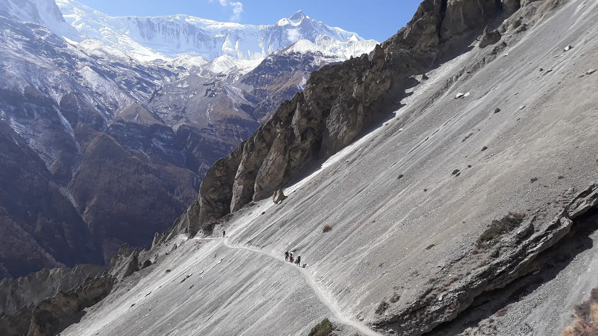
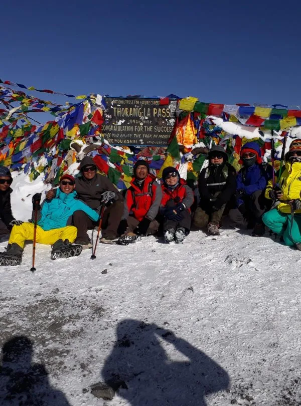
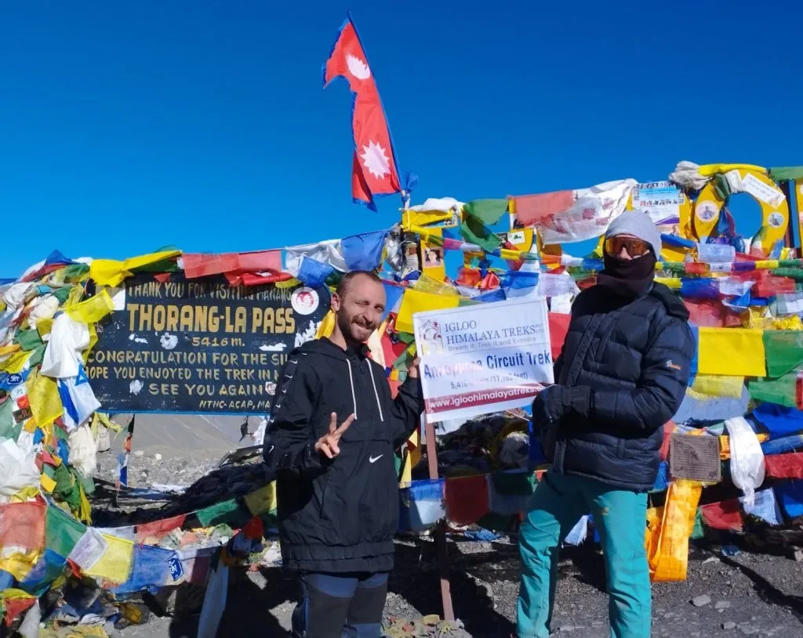

Adding Tilicho Lake (4,919 m) to our Annapurna Circuit trek was hands-down the greatest highlight of our Himalayan journey. The high glacial lake sitting beneath the Great Barrier wall took our breath away. Sagar and our experienced support team ensured meticulous acclimatization pacing through Manang and Siri Kharka, and crossing Thorong La (5,416 m) at sunrise felt safe and triumphant!
Annapurna Region • 18 Days High Pass & Glacial Lake Circuit
5.0
reviews on TripAdvisor
5.0
169 reviews on Google
Annapurna Circuit with Tilicho Lake — 18 Days
Follow the Marsyangdi Valley to Manang, add a Tilicho Lake excursion and cross Thorong La on our eighteen-day Annapurna Circuit trek. You walk through Dharapani, Chame and Upper Pisang before spending an acclimatisation day in Manang. The lake approach leads through Sirikhark and Tilicho Base Camp, then rejoins the circuit at Yak Kharka. Beyond the pass, descend to Muktinath and Jomsom. Expect consecutive walking days, exposed paths and demanding climbs at high altitude before returning through Pokhara.

Travelers' Choice
Best of the Best 2026




Key Trip Facts
Duration
18 Days
Kathmandu to Kathmandu (14 trekking days + 1 Manang rest)
Difficulty
Challenging
Sustained high walking, exposed lake trails & pass crossing
Maximum Altitude
5,416 m / 17,769 ft
Thorong La Pass (Tilicho Lake at 4,919 m / 16,138 ft)
Destination
Nepal
Annapurna Conservation Area (ACAP)
Activity
High Altitude Trekking
Alpine circuit, glacial lake & Thorong La crossing
Accommodation
3★ Hotels & Teahouses
KTM (3N) & PKR (1N) hotels; 13 nights mountain lodges
Transport
Private Transfers & Road
KTM–Jagat drive, Jomsom–Pokhara & Pokhara–KTM
Meals
All Meals on Trek (B, L, D)
Hotel breakfasts in KTM/PKR; full board on mountain trail
Recommended Season
Spring & Autumn
Mar–May & Sep–Nov (clear skies & open pass trails)
Trek Starts
Jagat (1,300 m)
Trailhead drive from Kathmandu via Besisahar
Trek Ends
Jomsom (2,720 m)
Trail end before overland road transfer to Pokhara
Trek Region
Annapurna Himalayas
Marsyangdi Valley, Tilicho & Kali Gandaki gorge
Package Start Point
Kathmandu, Nepal
Tribhuvan International Airport (KTM) greeting
Package End Point
Kathmandu, Nepal
Airport departure transfer included
Annapurna Circuit with Tilicho Lake Overview
Our eighteen-day Annapurna Circuit with Tilicho Lake trek combines the route through Manang with a lake excursion before crossing Thorong La. You approach Tilicho through Sirikhark and Tilicho Base Camp, then return to the main circuit at Yak Kharka. Muktinath and Jomsom complete the walking journey before road travel through Pokhara brings you to Kathmandu.
After arrival and a preparation day in Kathmandu, you drive to Jagat. Walking begins along the Marsyangdi Valley, continuing through Dharapani and Chame towards Upper Pisang. The route gains height as woodland gives way to more open mountain slopes. Village homes, cultivated ground and changing views accompany the approach to Manang, where two nights allow a full acclimatisation day before you turn towards the Tilicho Lake side trail.
From Manang, the route leaves the main circuit and heads towards Sirikhark. You continue to Tilicho Base Camp, the overnight stop before the lake hike. Day 11 climbs to Tilicho Lake and returns to Sirikhark that evening. This is a demanding excursion on exposed mountain paths, with the visit dependent on conditions and your health.
After the lake section, you rejoin the circuit at Yak Kharka and continue to Thorong Phedi. The following morning begins early for the climb to Thorong La, approximately 5,416 m. A long descent leads to Muktinath on the Mustang side. The route continues to Jomsom, where your walking programme ends before the road return through Pokhara and back to Kathmandu.
An acclimatisation day supports the ascent but does not remove altitude risk. Prepare for walking days, simpler mountain accommodation and changing conditions throughout this eighteen-day journey in Nepal.
Primary Route Waypoints
Jagat (1,300m)
→
Dharapani (1,860m)
→
Chame (2,670m)
→
Upper Pisang (3,300m)
→
Manang (3,540m)
→
Sirikhark (3,900m)
→
Tilicho Base Camp (4,150m)
→
Tilicho Lake (4,919m)
→
Yak Kharka (4,050m)
→
Thorong Phedi (4,450m)
→
Thorong La Pass (5,416m)
→
Muktinath (3,760m)
→
Jomsom (2,720m)
→
Pokhara (827m)
Want to know more about this trek?
Chat with us — real trekking experts, not bots.
Replies within 4 hours
Annapurna Circuit with Tilicho Lake Highlights
LOCAL HIMALAYAN OPERATOR
Why Book the Annapurna Circuit with Tilicho Lake with Igloo Himalaya Treks?
We help you prepare in Kathmandu and support the circuit, Tilicho Lake side trip and Thorong La pass crossing through these practical arrangements.
Trek Briefing and Gear Check
Your Kathmandu preparation day gives us time to discuss the route and check essential equipment. Ask about the Tilicho section, lodge facilities and the pass crossing before leaving Kathmandu.
Guide and Porter Support
Your package includes a licensed English-speaking guide and porter support. The guide leads the route and discusses daily conditions. Confirm the porter allocation and baggage allowance for your group before packing.
Equipment Provided for the Trek
We provide a sleeping bag, down jacket and duffel bag for use during the trek. Return all three afterwards. Bring your own boots, clothing and other personal essentials for the journey.
Communication When Plans Change
Weather, trail conditions and health can affect the lake visit and pass crossing. Our team discusses changes and their costs, including additional accommodation or transport when services fall outside your agreed programme.
Annapurna Circuit with Tilicho Lake (18 Days) Itinerary: Day by Day Details
Day 1: Arrival in Kathmandu
Tribhuvan International Airport, Kathmandu • 1,400 m / 4,593 ft
Activity / Pace: Arrival and airport transfer
Overnight: Kathmandu, around 1,400 m
Meals: Arrival-day meals per agreement
Welcome to Nepal. Our representative meets you at Tribhuvan International Airport and transfers you to your hotel in Kathmandu. After checking in, take time to rest, organise your belongings and prepare for tomorrow’s trek preparation and briefing. Depending on your arrival time, you can take a short walk or rest after your flight. Keep your travel documents accessible and note any equipment, health or dietary questions for the team.
Day 1 Summary Details
Main activity: Arrival and airport transfer
Overnight altitude: Kathmandu, around 1,400 m
Accommodation: 3-star hotel in Kathmandu
Meals: Arrival-day meals per agreement
Day 2: Trek Preparation in Kathmandu
Kathmandu Valley & Trek Briefing • 1,400 m / 4,593 ft
Activity / Pace: Trek briefing, equipment check and preparation
Overnight: Kathmandu, around 1,400 m
Meals: Breakfast
Today is set aside for trek preparation in Kathmandu. We discuss the eighteen-day route, check your equipment and review the arrangements before tomorrow’s drive to Jagat and the Annapurna region. Use the day to organise your trekking bag and daypack, obtain any missing personal items and discuss the lake hike and pass crossing. Tell us about dietary requirements, previous altitude difficulties or medical conditions. Confirm your porter allowance and keep medicines accessible. Afterwards, rest at your hotel before the early departure for the road journey.
Day 2 Summary Details
Main activity: Trek briefing, equipment check and preparation
Overnight altitude: Kathmandu, around 1,400 m
Accommodation: 3-star hotel in Kathmandu
Meals: Breakfast
Day 3: Drive from Kathmandu to Jagat
Kathmandu to Jagat via Besisahar • 1,300 m / 4,265 ft
Activity / Pace: Road journey from Kathmandu via Besisahar to Jagat
Overnight: Jagat, around 1,300 m
Meals: Breakfast, lunch and dinner
We leave Kathmandu and travel towards Jagat via Besisahar. Today is a road journey into the Annapurna region, with the first walking stage scheduled for tomorrow from Jagat. The journey follows roads through river valleys and cultivated hillsides before the final approach to Jagat. Roadworks, traffic and rough sections can lengthen the drive, so keep water, medicines and a warm layer nearby. On arrival, settle into your teahouse and rest. Your guide discusses the next day’s walk to Dharapani and the morning departure arrangements.
Day 3 Summary Details
Main activity: Road journey from Kathmandu via Besisahar to Jagat
Journey allowance: Full day; road conditions and traffic can extend the transfer
Overnight altitude: Jagat, around 1,300 m
Accommodation: Teahouse in Jagat
Meals: Breakfast, lunch and dinner
Day 4: Trek from Jagat to Dharapani
Jagat to Dharapani (Marsyangdi Valley) • 1,860 m / 6,102 ft
Activity / Pace: Approximately 5–6 hours
Overnight: Dharapani, around 1,860 m
Meals: Breakfast, lunch and dinner
Our first trekking day follows the Marsyangdi Valley from Jagat towards Dharapani. The route passes village homes and cultivated ground, with river crossings and uneven sections as we walk further upstream. Keep a comfortable pace while becoming accustomed to your boots, daypack and the walking routine. The valley route combines climbs with easier stretches, so use breaks to drink and adjust layers. At Dharapani, check into your teahouse and rest. Tomorrow, you continue towards Chame and spend the night higher up.
Day 4 Summary Details
Walking time: Approximately 5–6 hours
Walking route: Jagat–Dharapani
Overnight altitude: Dharapani, around 1,860 m
Accommodation: Teahouse in Dharapani
Meals: Breakfast, lunch and dinner
Day 5: Trek from Dharapani to Chame
Dharapani to Chame • 2,670 m / 8,760 ft
Activity / Pace: Approximately 5–6 hours
Overnight: Chame, around 2,670 m
Meals: Breakfast, lunch and dinner
Leaving Dharapani, we continue towards Chame along the Marsyangdi Valley. Forest paths and village sections accompany the climb, with bridges and uneven ground along the way. You gain sleeping altitude again on today’s walking stage. Walk steadily and allow time for breaks as the route leads deeper into the mountains. Keep rain protection and drinking water accessible throughout the day. On reaching Chame, settle into the teahouse, have dinner and prepare your belongings for the walk to Upper Pisang.
Day 5 Summary Details
Walking time: Approximately 5–6 hours
Walking route: Dharapani–Chame
Overnight altitude: Chame, around 2,670 m
Accommodation: Teahouse in Chame
Meals: Breakfast, lunch and dinner
Day 6: Trek from Chame to Upper Pisang
Chame to Upper Pisang • 3,300 m / 10,827 ft
Activity / Pace: Approximately 5–6 hours
Overnight: Upper Pisang, around 3,300 m
Meals: Breakfast, lunch and dinner
Today’s route continues from Chame towards Upper Pisang, following the valley into higher country. The scenery becomes more open as you approach the village. Uphill sections and uneven paths require a steady pace throughout this mountain walking day. Upper Pisang is around 3,300 m, above the forested stages earlier in the trek. Settle into your teahouse and keep warm layers close for the evening. Tell your guide about headaches, nausea or unusual fatigue before continuing towards Manang tomorrow.
Day 6 Summary Details
Walking time: Approximately 5–6 hours
Walking route: Chame–Upper Pisang
Overnight altitude: Upper Pisang, around 3,300 m
Accommodation: Teahouse in Upper Pisang
Meals: Breakfast, lunch and dinner
Day 7: Trek from Upper Pisang to Manang
Upper Pisang to Manang • 3,540 m / 11,614 ft
Activity / Pace: Full trekking day; time depends on the chosen trail variant
Overnight: Manang, around 3,540 m
Meals: Breakfast, lunch and dinner
We walk from Upper Pisang to Manang, continuing along the Annapurna Circuit. The day’s trail choice depends on conditions and the programme, with mountain views when clouds clear along the valley. Manang, around 3,540 m, is the base for your acclimatisation day. You spend two nights here before leaving the main circuit towards Tilicho. After reaching the teahouse, take time to rest and eat. Discuss how you are feeling with your guide so tomorrow’s shorter activity suits your progress at altitude.
Day 7 Summary Details
Walking allowance: Full trekking day; time depends on the chosen trail variant
Walking route: Upper Pisang–Manang
Overnight altitude: Manang, around 3,540 m
Accommodation: Teahouse in Manang
Meals: Breakfast, lunch and dinner
Day 8: Acclimatisation Day at Manang
Manang Acclimatisation Walk • 3,540 m / 11,614 ft
Activity / Pace: Acclimatisation, rest and a shorter walk if appropriate
Overnight: Manang, around 3,540 m
Meals: Breakfast, lunch and dinner
We stay another night in Manang and use today for acclimatisation. A shorter walk may take you above the village, with the direction and turnaround point chosen according to conditions and how you feel. Return to Manang to sleep at the same elevation. The afternoon allows time for rest and preparation for the Tilicho approach. Avoid treating this as an extra demanding trekking day. Report any altitude symptoms before tomorrow’s walk towards Sirikhark and higher ground.
Day 8 Summary Details
Main activity: Acclimatisation, rest and a shorter walk if appropriate
Walking time: Depends on the selected walk and how you feel
Overnight altitude: Manang, around 3,540 m
Accommodation: Teahouse in Manang
Meals: Breakfast, lunch and dinner
Day 9: Trek from Manang to Sirikhark
Manang to Sirikhark (Tilicho route) • 3,900 m / 12,795 ft
Activity / Pace: Approximately 4–5 hours
Overnight: Sirikhark, around 3,900 m
Meals: Breakfast, lunch and dinner
Leaving Manang, we turn away from the main circuit towards Sirikhark on the Tilicho Lake approach. The path leads into a side valley, with climbing and uneven mountain ground before the overnight stop further ahead. Sirikhark is around 3,900 m, higher than Manang. Keep a measured pace and discuss symptoms with your guide as you gain height. After arrival, rest at the teahouse and prepare for tomorrow’s exposed approach to Tilicho Base Camp. Facilities become simpler along this route.
Day 9 Summary Details
Walking time: Approximately 4–5 hours
Walking route: Manang–Sirikhark
Overnight altitude: Sirikhark, around 3,900 m
Accommodation: Teahouse in Sirikhark
Meals: Breakfast, lunch and dinner
Day 10: Trek from Sirikhark to Tilicho Base Camp
Sirikhark to Tilicho Base Camp • 4,150 m / 13,615 ft
Activity / Pace: Approximately 4–5 hours
Overnight: Tilicho Base Camp, around 4,150 m
Meals: Breakfast, lunch and dinner
Today we continue from Sirikhark to Tilicho Base Camp. The mountain path crosses exposed ground where careful footing matters, particularly on loose slopes. Follow your guide’s instructions and allow other walkers space as you approach the overnight stop. Tilicho Base Camp is around 4,150 m, with basic teahouse accommodation. Rest after arrival and prepare warm layers, water and your headtorch for tomorrow’s early departure. Your guide reviews the lake plan according to conditions and how you are feeling.
Day 10 Summary Details
Walking time: Approximately 4–5 hours
Walking route: Sirikhark–Tilicho Base Camp
Overnight altitude: Tilicho Base Camp, around 4,150 m
Accommodation: Teahouse at Tilicho Base Camp
Meals: Breakfast, lunch and dinner
Day 11: Hike to Tilicho Lake and Return to Sirikhark
Tilicho Lake Excursion & Return to Sirikhark • 4,919 m / 16,138 ft
Activity / Pace: Tilicho Lake hike and return to Sirikhark
Overnight: Sirikhark, around 3,900 m
Meals: Breakfast, lunch and dinner
We start early for the planned Tilicho Lake hike, subject to weather, trail conditions and your health. The route climbs above base camp over steep and uneven mountain terrain. Tilicho Lake lies at approximately 4,919 m. Reaching it involves sustained effort in thin air, followed by a long return. Keep warm clothing and water accessible, and agree a turnaround time with your guide before leaving. After the lake visit, descend past Tilicho Base Camp and continue to Sirikhark for the night. The itinerary returns here, before rejoining the circuit at Yak Kharka.
Day 11 Summary Details
Main activity: Tilicho Lake hike and return to Sirikhark
Walking allowance: Long full-day excursion; confirm allowance for complete return
Daytime high point: Tilicho Lake, approximately 4,919 m
Overnight altitude: Sirikhark, around 3,900 m
Accommodation: Teahouse in Sirikhark
Meals: Breakfast, lunch and dinner
Day 12: Trek from Sirikhark to Yak Kharka
Sirikhark to Yak Kharka • 4,050 m / 13,287 ft
Activity / Pace: Approximately 5–6 hours
Overnight: Yak Kharka, around 4,050 m
Meals: Breakfast, lunch and dinner
From Sirikhark, we leave the Tilicho side trail and work back towards the main Annapurna Circuit. The route includes downhill and uphill stretches before reaching Yak Kharka, the next overnight stop towards the high pass. Yak Kharka is around 4,050 m. Although lower than yesterday’s lake visit, it remains a high overnight stop. Walk steadily, eat regularly and tell your guide about symptoms. After checking into your teahouse, rest and prepare for the shorter approach to Thorong Phedi tomorrow.
Day 12 Summary Details
Walking time: Approximately 5–6 hours
Walking route: Sirikhark–Yak Kharka
Overnight altitude: Yak Kharka, around 4,050 m
Accommodation: Teahouse in Yak Kharka
Meals: Breakfast, lunch and dinner
Day 13: Trek from Yak Kharka to Thorong Phedi
Yak Kharka to Thorong Phedi • 4,450 m / 14,600 ft
Activity / Pace: Approximately 3–4 hours
Overnight: Thorong Phedi, around 4,450 m
Meals: Breakfast, lunch and dinner
We continue from Yak Kharka to Thorong Phedi, the planned overnight stop below Thorong La. Today’s shorter walking stage still gains height, so maintain a comfortable pace and take care on the rocky mountain paths approaching the lodge. Thorong Phedi, around 4,450 m, is your highest overnight stop. Spend the afternoon resting and organising tomorrow’s essentials. Your guide discusses the early departure, weather and pass conditions. The crossing depends on your health and current access along the route.
Day 13 Summary Details
Walking time: Approximately 3–4 hours
Walking route: Yak Kharka–Thorong Phedi
Overnight altitude: Thorong Phedi, around 4,450 m
Accommodation: Teahouse at Thorong Phedi
Meals: Breakfast, lunch and dinner
Day 14: Cross Thorong La Pass and Trek to Muktinath
Thorong La Pass (5,416 m) to Muktinath • 5,416 m / 17,769 ft
Activity / Pace: Approximately 8–10 hours; conditions can extend the day
Overnight: Muktinath, around 3,760 m
Meals: Breakfast, lunch and dinner
An early departure begins the climb from Thorong Phedi towards Thorong La. The pass, approximately 5,416 m, is the highest point of this itinerary. Walking is demanding in thin air, with cold conditions possible throughout the long uphill mountain approach. After reaching the pass, descend towards Muktinath on the Mustang side. The descent is lengthy and requires careful footing, especially if snow or ice remains. Muktinath is around 3,760 m, considerably below the pass. Rest at the lodge after completing this demanding walking day.
Day 14 Summary Details
Walking time: Approximately 8–10 hours; conditions can extend the day
Walking route: Thorong Phedi–Thorong La–Muktinath
Daytime high point: Thorong La Pass, approximately 5,416 m
Overnight altitude: Muktinath, around 3,760 m
Accommodation: Teahouse or lodge in Muktinath
Meals: Breakfast, lunch and dinner
Day 15: Trek from Muktinath to Jomsom
Muktinath to Jomsom (Kali Gandaki) • 2,720 m / 8,924 ft
Activity / Pace: Full trekking day; confirm final trail variant and time
Overnight: Jomsom, around 2,720 m
Meals: Breakfast, lunch and dinner
We leave Muktinath and continue towards Jomsom, completing the planned walking route. The journey descends into Lower Mustang, with village paths and open stretches before reaching the overnight lodge. Jomsom is around 2,720 m, lower than the previous mountain stops. Take care on uneven ground and keep a windproof layer accessible. Once you reach the lodge, organise your luggage for tomorrow’s road transfer. This is the final trekking night before returning through Pokhara and Kathmandu at the programme’s end.
Day 15 Summary Details
Walking allowance: Full trekking day; confirm final trail variant and time
Walking route: Muktinath–Jomsom
Overnight altitude: Jomsom, around 2,720 m
Accommodation: Lodge in Jomsom
Meals: Breakfast, lunch and dinner
Day 16: Drive from Jomsom to Pokhara
Jomsom to Pokhara (Overland Transfer) • 827 m / 2,713 ft
Activity / Pace: Road transfer from Jomsom to Pokhara
Overnight: Pokhara, around 827 m
Meals: Breakfast
Today we leave Jomsom and travel by road to Pokhara. The journey follows the Kali Gandaki valley towards lower country, with changing scenery as the mountains give way to greener hillsides. Allow a full day for the transfer, as road conditions and traffic affect the journey. Keep medicines and travel essentials in your daypack. After arrival in Pokhara, check into your hotel and rest. If time allows, take a short walk near Phewa Lake before tomorrow’s road journey back to Kathmandu.
Day 16 Summary Details
Main activity: Road transfer from Jomsom to Pokhara
Journey allowance: Full day; rough roads and delays can lengthen transfer
Overnight altitude: Pokhara, around 827 m
Accommodation: 3-star hotel in Pokhara
Meals: Breakfast
Day 17: Drive from Pokhara to Kathmandu
Pokhara to Kathmandu (Prithvi Highway) • 1,400 m / 4,593 ft
Activity / Pace: Road return from Pokhara to Kathmandu
Overnight: Kathmandu, around 1,400 m
Meals: Breakfast
After breakfast, we leave Pokhara and return to Kathmandu by road. The journey follows river valleys and hillsides, with stops along the way according to the day’s conditions. Traffic, roadworks and weather can lengthen the journey. Keep travel documents and essentials accessible. After reaching Kathmandu, check into your hotel and organise your belongings for departure. Use the remaining time to rest or discuss any arrangements with us.
Day 17 Summary Details
Main activity: Road return from Pokhara to Kathmandu
Driving time: Approximately 6–7 hours; allow longer for road conditions
Overnight altitude: Kathmandu, around 1,400 m
Accommodation: 3-star hotel in Kathmandu
Meals: Breakfast
Day 18: Farewell and Departure
Kathmandu Hotel to Airport (Departure) • 1,400 m / 4,593 ft
Activity / Pace: Departure and airport transfer
Overnight: Kathmandu Hotel to Airport (Departure), around 1400 m
Meals: Breakfast
Your eighteen-day programme ends today. After breakfast, organise your luggage and prepare for the airport transfer according to your flight schedule. Check that your passport, tickets and travel essentials are accessible before leaving the hotel. We transfer you to the airport for your departure from Nepal.
Day 18 Summary Details
Main activity: Departure and airport transfer
Meals: Breakfast
What’s Included & Excluded in the Annapurna Circuit with Tilicho Lake Trek
Transparent inclusions and clear exclusions for the eighteen-day Annapurna Circuit with Tilicho Lake trek.
Equipment Loan Included (Free of Charge)
We provide a sleeping bag (-15°C to -20°C rating), high-altitude down jacket, and an 80-litre water-resistant duffel bag for your trek.
What’s Included
-
Airport transfers: Pickup and drop-off in Kathmandu for arrival and departure flights.
-
Ground transport: Road journeys from Kathmandu to Jagat, Jomsom to Pokhara and Pokhara to Kathmandu within the agreed itinerary.
-
Accommodation: 3-star hotel stays in Kathmandu and Pokhara with breakfast, plus teahouses and lodges on the trekking route, with room arrangements agreed before your trip begins.
-
Meals: Breakfast, lunch and dinner during the trekking programme, with hotel breakfasts in Kathmandu and Pokhara. Your quotation confirms arrival-day meals and any additional city dinner allowances.
-
Guide and porter: A licensed English-speaking trekking guide and porter support for your mountain journey.
-
Permits: The Annapurna Conservation Area Permit (ACAP) is included; confirm TIMS arrangements and any additional documentation costs before departure.
-
Trekking equipment: Use of a sleeping bag, down jacket and duffel bag, with all three returned after the trek is completed.
-
First-aid support: Basic first-aid support provided as part of the trekking package.
-
Staff insurance: Insurance for the trekking team during the agreed programme.
-
Trip extras: A trekking map and completion certificate provided as part of this package.
What’s Not Included
-
International flights & visa: Airfare to and from Nepal and your Nepal entry visa fee.
-
Travel insurance: Your personal policy, including high-altitude medical treatment and emergency evacuation cover up to 5,416 metres.
-
Personal equipment: Boots, clothing, toiletries and electronics, plus other personal items beyond the included loaned gear.
-
Extra food and drinks: Bottled water, soft drinks, alcohol, snacks and beverages beyond the agreed trekking and hotel allowances.
-
Other city meals: Lunches and dinners in Kathmandu and Pokhara outside any additional meal allowance specifically confirmed in your quotation.
-
Personal services: Laundry, internet access, phone charges, hot showers and device charging where fees apply.
-
Tips: Voluntary gratuities for your guide, porter and drivers.
-
Optional sightseeing: Tours, monument tickets and excursions outside this itinerary.
-
Additional services: Extra accommodation, meals or transport required outside the agreed itinerary because of delays, personal changes or circumstances.
Booking Dates & Availability for Annapurna Circuit with Tilicho Lake (18 Days)
Starting Prices by Group Size
Prices per person based on group size with full service inclusions, private transfers, and experienced local guides:
1 person (Solo)
$1499
PER PERSON
2–4 people
$1355
PER PERSON
5–9 people
$1285
POPULAR CHOICE
10+ people
Custom Quote
CUSTOM QUOTE
10
MAR
Mar 10 – Mar 27, 2026
GUARANTEED$1,285 pp
25
MAR
Mar 25 – Apr 11, 2026
AVAILABLE$1,285 pp
Packing List for Annapurna Circuit with Tilicho Lake
Pack in layers for warmer lower valleys, freezing ridge nights and the high pass crossing. Keep water, warm layers, medicines and valuables in your daypack. Use our interactive checklist to track your gear preparation.
Packed:
0
/
33
Hiking Gear
7 itemsClothing & Layers
7 itemsHeadwear & Gloves
5 itemsSleeping & Hygiene
6 itemsElectronics & Power
4 itemsMedical & Documents
4 itemsRead before you book, Annapurna Circuit with Tilicho Lake
Essential logistical, health, altitude, permit and accommodation briefing notes before embarking on this 18-day trek.
0%
Reading Progress
0 of 10 topics read
Click topics below to explore essential briefingsTrek Difficulty and Fitness
Challenging mountain trek; sustained climbs, high pass & exposed paths.
✓
∨
This is a challenging trek involving sustained climbs, uneven ground and exposed sections near Tilicho. The lake excursion and Thorong La crossing are particularly demanding. Prepare for repeated mountain walking days and long descents, practising with your daypack on uneven ground before departing for the trek.
Previous trekking experience is recommended. Prepare with longer hill walks, practising uphill and downhill walking with the daypack and boots you will use.
Begin preparing around two to three months beforehand, allowing longer if you are starting from a low fitness level. Gradually combine regular walks, hill hikes and strength exercises. Practise in the boots you will wear on the trek.
Altitude and Acclimatisation
Gradual profile with Manang rest; Thorong La (5,416 m) & Tilicho (4,919 m).
✓
∨
Two nights in Manang provide an acclimatisation day before the Tilicho approach. The itinerary then gains sleeping altitude through Sirikhark and base camp before returning lower after the lake.
Report headaches, nausea, dizziness or unusual fatigue to your guide. Do not ascend with symptoms of altitude illness. If symptoms worsen despite rest at the same elevation, descend. Manang’s extra night does not guarantee protection, and the lake visit or pass crossing may need to change.
Medical Conditions and Travel Insurance
Mandatory emergency evacuation and medical insurance covering 5,416 m.
✓
∨
If you have an existing medical condition, seek advice from a healthcare professional familiar with high-altitude travel before booking. Discuss the planned route and any medicines you take.
Arrange insurance covering trekking to at least 5,416 metres, medical treatment and emergency evacuation in Nepal. The package requires insurance, which is excluded from the price. Check exclusions, excess charges and assistance procedures with your insurer. Carry policy details and emergency contacts throughout.
Accommodation and Room Facilities
3-star city hotels in KTM & Pokhara; authentic mountain teahouses on trail.
✓
∨
The itinerary has three Kathmandu hotel nights, one in Pokhara and thirteen in mountain teahouses or lodges. Manang has two consecutive nights; Sirikhark is visited before and after the lake hike.
Mountain rooms have twin beds and basic furnishings, with shared bathrooms common higher up. Expect limited heating near Tilicho and Thorong Phedi. Confirm room arrangements, and keep warm layers and the sleeping bag accessible at overnight stops.
Food and Dietary Requirements
Hearty teahouse dining (Dal Bhat, noodles, soups) with vegetarian options.
✓
∨
Trekking meals include breakfast, lunch and dinner. Menus commonly offer dal bhat, noodles, soups and vegetable dishes, with choices varying between lodges.
Tell us about allergies or dietary requirements before booking so we can discuss what can be arranged along the route. Explain strict requirements clearly, including any concerns about shared cooking equipment.
Drinking Water Safety
Drink boiled water or use reliable multi-stage purification.
✓
∨
Carry reusable bottles and drink boiled or appropriately treated water. Stream water and untreated tap water may still contain germs that cause illness.
Boiling is the most reliable way to kill germs. If boiling is unavailable, filtration followed by disinfection offers broader protection than many portable filters alone. Follow the instructions for your water-treatment equipment or tablets.
Guide and Porter Support
Licensed English-speaking guide and insured porter support included.
✓
∨
A licensed English-speaking guide and porter support are included, with staff insurance. Confirm the porter allocation and baggage allowance for your group before packing. You carry water, medicines and essentials in your daypack.
Showers, Charging and Communication
Hot showers and charging available at lower lodges; basic facilities high up.
✓
∨
Hot showers, Wi-Fi and device charging may cost extra, with availability varying between lodges. Services become more limited around Tilicho and Thorong Phedi. Carry a charged power bank and tell family that contact may be irregular. Ask your guide about available services at each overnight stop.
Permits and Documents
ACAP included; TIMS registration & licensed guide mandatory.
✓
∨
ACAP is included. The Annapurna Circuit also requires an agency-issued TIMS card and licensed guide under the tourism board’s listed provisions. Confirm TIMS arrangements and costs before departure. Carry your passport, insurance details and permit copies.
Travel Delays and Extra Time
Allow contingency days for mountain weather, pass access & road conditions.
✓
∨
Rain, landslides and roadworks can affect transfers. Snow, wind and visibility can affect Tilicho and Thorong La, so allow flexibility around walking and travel.
Allow extra time before your international departure. Additional accommodation, meals or transport can cost extra when delays or changes require services outside the programme.
Altitude Profile of the Annapurna Circuit with Tilicho Lake
The route climbs from Jagat through Upper Pisang to Manang, where you stay two nights for acclimatisation. The Tilicho section reaches the lake during a day hike before returning to Sirikhark. You then continue through Yak Kharka to Thorong Phedi, cross Thorong La and descend towards Jomsom.
Day 8 • Crucial Acclimatization
Manang Village
Around 3,540 m, with two consecutive nights to adapt before heading into the high Tilicho valley.
Day 11 • High Alpine Excursion
Tilicho Lake
Approximately 4,919 m glacial lake excursion before returning to Sirikhark for the overnight lodge.
Day 13 • Highest Overnight Lodge
Thorong Phedi
Around 4,450 m at the base of the pass, resting early for the pre-dawn crossing climb.
Day 14 • Itinerary Highest Point
Thorong La Pass
Approximately 5,416 m / 17,769 ft, crossing into the Mustang Valley before descending to Muktinath.
| Day | Overnight Stop | Approximate Altitude |
|---|---|---|
| Day 1 | Kathmandu | 1,400 m / 4,593 ft |
| Day 2 | Kathmandu | 1,400 m / 4,593 ft |
| Day 3 | Jagat | 1,300 m / 4,265 ft |
| Day 4 | Dharapani | 1,860 m / 6,102 ft |
| Day 5 | Chame | 2,670 m / 8,760 ft |
| Day 6 | Upper Pisang | 3,300 m / 10,827 ft |
| Day 7 | Manang | 3,540 m / 11,614 ft |
| Day 8 | Manang (Acclimatisation) | 3,540 m / 11,614 ft |
| Day 9 | Sirikhark | 3,900 m / 12,795 ft |
| Day 10 | Tilicho Base Camp | 4,150 m / 13,615 ft |
| Day 11 | Sirikhark (via Tilicho Lake 4,919 m) | 3,900 m / 12,795 ft |
| Day 12 | Yak Kharka | 4,050 m / 13,287 ft |
| Day 13 | Thorong Phedi | 4,450 m / 14,600 ft |
| Day 14 | Muktinath (via Thorong La 5,416 m) | 3,760 m / 12,336 ft |
| Day 15 | Jomsom | 2,720 m / 8,924 ft |
| Day 16 | Pokhara | 827 m / 2,713 ft |
| Day 17 | Kathmandu | 1,400 m / 4,593 ft |
| Day 18 | Departure | No overnight stay |
Weather and Best Time for the Annapurna Circuit with Tilicho Lake
Conditions change significantly with altitude and season. Spring and autumn are the standard trekking periods, when high passes and lakes are most accessible. Winter brings extreme cold and snow, while monsoon affects lower roads.
Autumn (Sep–Nov)
Peak Season • Clear SkiesPristine mountain vistas, stable dry weather, crisp air and open high pass trails. Best for photography.
Spring (Mar–May)
Prime Season • WildflowersWarmer temperatures, blooming rhododendron forests at lower elevations, and lengthening mountain daylight hours.
Monsoon (Jun–Aug)
Rain Shadow • Quieter TrailsHeavy rain on southern approaches. Manang and Mustang sit partly in rain shadow, but road landslides occur.
Winter (Dec–Feb)
Cold & Clear • Snow CoverSevere sub-zero cold above 3,500 m. Heavy snow often blocks Thorong La and freezes Tilicho Lake.
| Season | Months | Expected Mountain Conditions |
|---|---|---|
| Spring | March–May | Lower sections become warmer, while mountain nights remain cold. Snow and ice can persist on the lake approach and pass, particularly early in the season. Check access before choosing departure dates. |
| Autumn | September–November | Early September can retain monsoon rain on lower trails and roads. October and November generally favour clearer views, with colder nights later in the season. High trail snowfall remains possible. |
| Winter | December–February | Severe cold, snow and ice can obstruct Tilicho Lake and Thorong La. Teahouse availability and access need checking. Discuss the actual route, conditions and alternatives before planning a departure. |
| Monsoon | June–August, extending into Sept | Rain can make lower paths slippery and trigger road delays or landslides. The upper valley is drier than lower approaches, but exposed slopes and mountain weather still need assessment. Views may be limited. |
Annapurna Circuit with Tilicho Lake Route Map
Our route follows the Marsyangdi Valley from Jagat and Dharapani through Chame and Pisang to Manang. The Tilicho excursion branches off through Sirikhark and Tilicho Base Camp to the lake, before rejoining at Yak Kharka to cross Thorong La (5,416m) into Muktinath and Jomsom.
Book the Annapurna Circuit with Tilicho Lake
Send us your target travel dates, number of travellers and any questions about this Tilicho Lake and Thorong La itinerary. We’ll confirm current prices, accommodation and transport for your group. Tell us about your trekking experience so we can discuss preparation before you book this eighteen-day journey.
✓ 100% Tailor-made flexibility
✓ No hidden payment fees
✓ Guaranteed departures
Best Himalayan Trekking Reviews
Over 15,000 adventure seekers have explored Everest, Annapurna, and Manaslu with Igloo Himalaya Treks.

9 May

28 February

11 January

14 March


Annapurna Circuit with Tilicho Lake FAQs
General & Route
Can I do this trek without previous trekking experience?
∨
Previous trekking experience is recommended because this route includes exposed trails, long mountain days and a high pass crossing. If you are new to trekking, discuss your preparation with us before booking and practise longer hill walks beforehand.
What is the highest altitude on this itinerary?
∨
Thorong La Pass, approximately 5,416 metres, is the highest point. Tilicho Lake is approximately 4,919 metres. Thorong Phedi, around 4,450 metres, is the highest overnight stop, with the route descending to Muktinath after the pass crossing.
Is Tilicho Lake higher than Thorong La Pass?
∨
No. Tilicho Lake is approximately 4,919 metres, while Thorong La reaches approximately 5,416 metres. Both involve demanding high-altitude walking. The lake visit is on Day 11, followed by the Thorong La pass crossing on Day 14.
Do we sleep overnight at Tilicho Lake?
∨
No. Day 10 stays at Tilicho Base Camp. Day 11 visits the lake and returns to Sirikhark for the night. You then continue to Yak Kharka. The lake is a daytime excursion, with the visit dependent on current conditions.
Is the Tilicho Lake hike compulsory?
∨
The lake visit is planned, but weather, trail conditions or altitude symptoms may prevent it. Discuss alternatives with your guide. Missing the lake does not automatically make the pass suitable; your health still governs decisions.
Do I need to carry my main trekking bag?
∨
Porter support is included. Confirm the allocation and baggage allowance for your group before packing. You carry a daypack with water, warm layers, medicines, valuables and essentials, keeping items you need during the day accessible.
Do I need to bring a sleeping bag and down jacket?
∨
We provide a sleeping bag, down jacket and duffel bag for use during the trek. Return all three afterwards. Bring your own boots, clothing and personal essentials. Confirm the equipment’s warmth and suitability for your departure season.
Is insurance covering trekking to 5,000 metres sufficient?
∨
No. Thorong La reaches approximately 5,416 metres, above that limit. Choose insurance covering the full route, trekking activity, medical treatment and emergency evacuation in Nepal. Check altitude exclusions and the insurer’s assistance procedure before you leave for trekking.
Does being fit protect me from altitude sickness?
∨
No. Good fitness helps with the physical demands but does not prevent altitude illness. Fit and experienced trekkers can also become unwell. Report symptoms promptly and follow appropriate advice instead of assuming fitness will protect you at altitude.
What should I do if I feel unwell at altitude?
∨
Tell your guide about headaches, nausea, dizziness or unusual fatigue. Do not ascend with symptoms of altitude illness. If symptoms worsen despite rest at the same elevation, descent is necessary. Your itinerary may need to change accordingly.
Can I book as a solo traveller?
∨
Yes. The solo starting price is from USD 1,499 per person. Send us your dates so we can confirm availability and your quotation, including the room arrangement, porter allocation and any supplement for your departure.
How does this differ from the shorter Annapurna Circuit?
∨
This eighteen-day programme adds Kathmandu preparation and the Tilicho Lake side trip before rejoining the circuit at Yak Kharka. The shorter circuit continues from Manang towards the pass without this lake section. Compare the itinerary, demands and your available time.